2023 National 5 Computing Science questions
Source: Scottish Qualifications Authority (SQA) / Qualifications Scotland. This is a StemInteract HTML companion, not an official HTML edition. Selectable text is supplied alongside original page images. Use the images or original PDF for equations, powers, fractions, vector notation, tables and diagrams; text extraction cannot fully preserve mathematical layout.
Jump to a question
PDF page 1
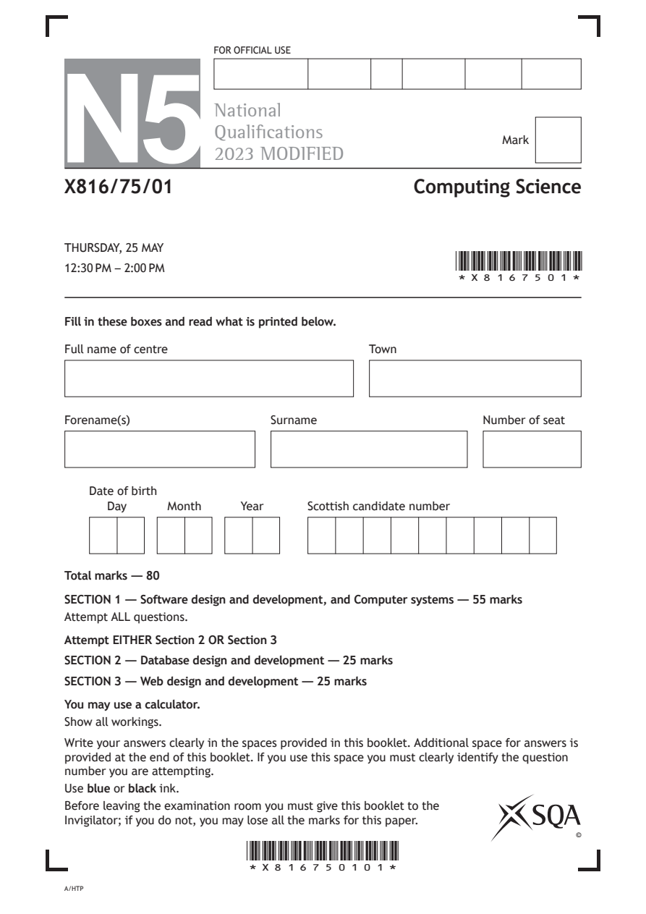
Selectable page text
FOR OFFICIAL USE
N5
National
Qualications
Mark
2023 MODIFIED
X816/75/01 Computing Science
THURSDAY, 25 MAY
12:30 PM – 2:00 PM
*X8167501*
Fill in these boxes and read what is printed below.
Full name of centre Town
Forename(s) Surname Number of seat
Date of birth
Day Month Year Scottish candidate number
Total marks — 80
SECTION 1 — Software design and development, and Computer systems — 55 marks
Attempt ALL questions.
Attempt EITHER Section 2 OR Section 3
SECTION 2 — Database design and development — 25 marks
SECTION 3 — Web design and development — 25 marks
You may use a calculator.
Show all workings.
Write your answers clearly in the spaces provided in this booklet. Additional space for answers is
provided at the end of this booklet. If you use this space you must clearly identify the question
number you are attempting.
Use blue or black ink.
Before leaving the examination room you must give this booklet to the
Invigilator; if you do not, you may lose all the marks for this paper.
©
*X816750101*
A/HTPPDF page 2
Question 1Question 2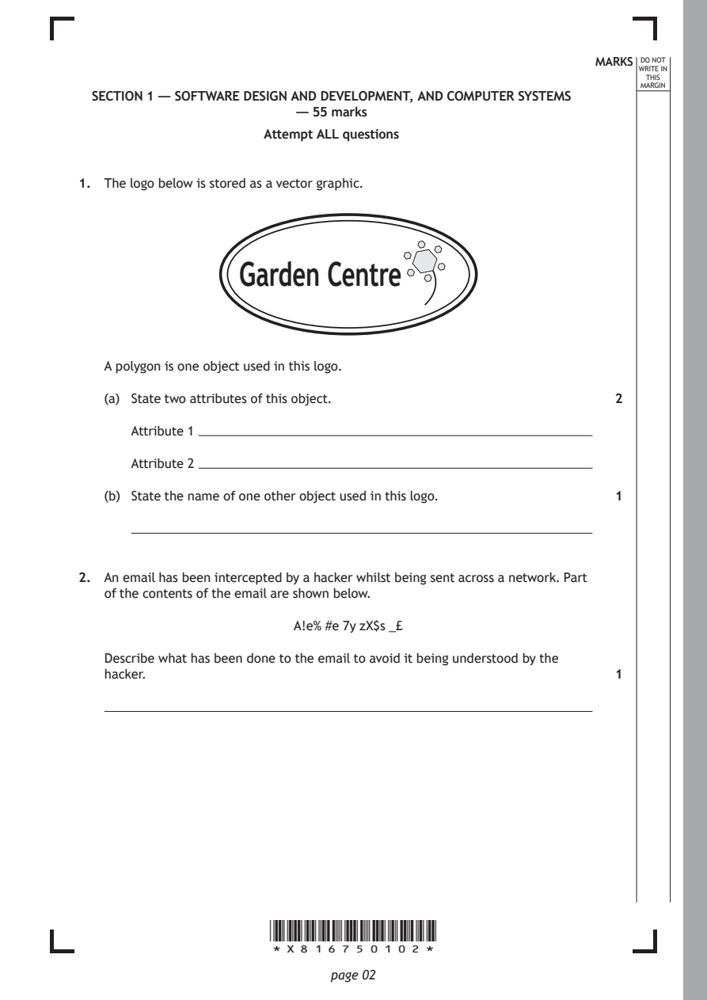
Selectable page text
MARKS DO NOT
WRITE IN
THIS
MARGIN
SECTION 1 — SOFTWARE DESIGN AND DEVELOPMENT, AND COMPUTER SYSTEMS
— 55 marks
Attempt ALL questions
1. The logo below is stored as a vector graphic.
Garden Centre
A polygon is one object used in this logo.
(a) State two attributes of this object. 2
Attribute 1
Attribute 2
(b) State the name of one other object used in this logo. 1
2. An email has been intercepted by a hacker whilst being sent across a network. Part
of the contents of the email are shown below.
A!e% #e 7y zX$s _£
Describe what has been done to the email to avoid it being understood by the
hacker. 1
*X816750102*
page 02PDF page 3
Question 3Question 4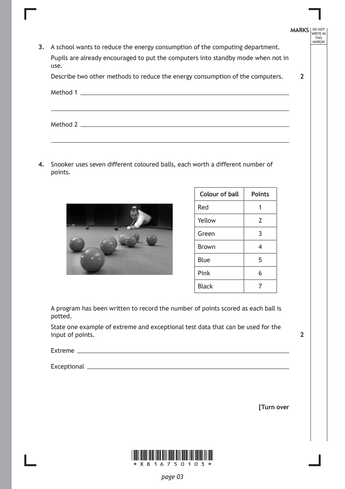
Selectable page text
MARKS DO NOT
WRITE IN
THIS
MARGIN
3. A school wants to reduce the energy consumption of the computing department.
Pupils are already encouraged to put the computers into standby mode when not in
use.
Describe two other methods to reduce the energy consumption of the computers. 2
Method 1
Method 2
4. Snooker uses seven different coloured balls, each worth a different number of
points.
Colour of ball Points
Red 1
Yellow 2
Green 3
Brown 4
Blue 5
Pink 6
Black 7
A program has been written to record the number of points scored as each ball is
potted.
State one example of extreme and exceptional test data that can be used for the
input of points. 2
Extreme
Exceptional
[Turn over
*X816750103*
page 03PDF page 4
Question 5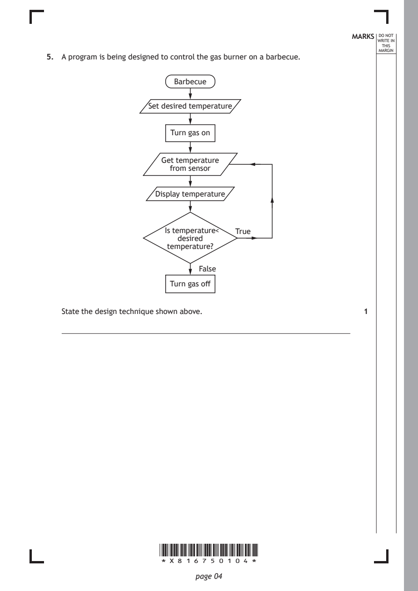
Selectable page text
MARKS DO NOT
WRITE IN
THIS
MARGIN
5. A program is being designed to control the gas burner on a barbecue.
Barbecue
Set desired temperature
Turn gas on
Get temperature
from sensor
Display temperature
Is temperature< True
desired
temperature?
False
Turn gas off
State the design technique shown above. 1
*X816750104*
page 04PDF page 5
Question 6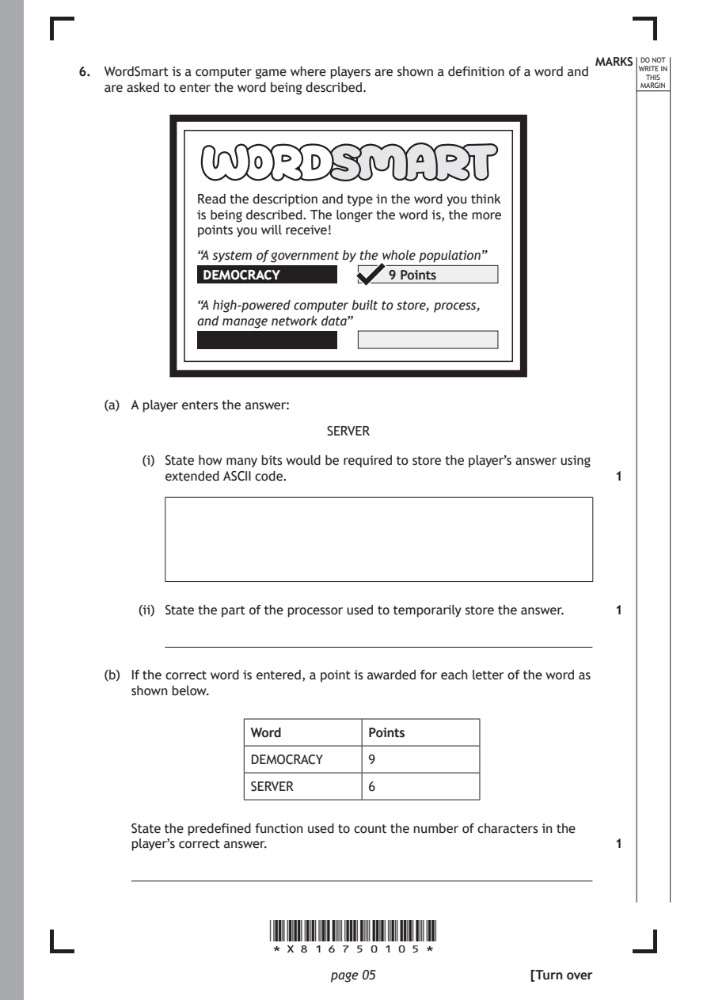
Selectable page text
MARKS DO NOT
6. WordSmart is a computer game where players are shown a definition of a word and WRITE IN
THIS
are asked to enter the word being described. MARGIN
Read the description and type in the word you think
is being described. The longer the word is, the more
points you will receive!
“A system of government by the whole population”
DEMOCRACY 9 Points
“A high-powered computer built to store, process,
and manage network data”
(a) A player enters the answer:
SERVER
(i) State how many bits would be required to store the player’s answer using
extended ASCII code. 1
(ii) State the part of the processor used to temporarily store the answer. 1
(b) If the correct word is entered, a point is awarded for each letter of the word as
shown below.
Word Points
DEMOCRACY 9
SERVER 6
State the predefined function used to count the number of characters in the
player’s correct answer. 1
*X816750105*
page 05 [Turn overPDF page 6
Question 7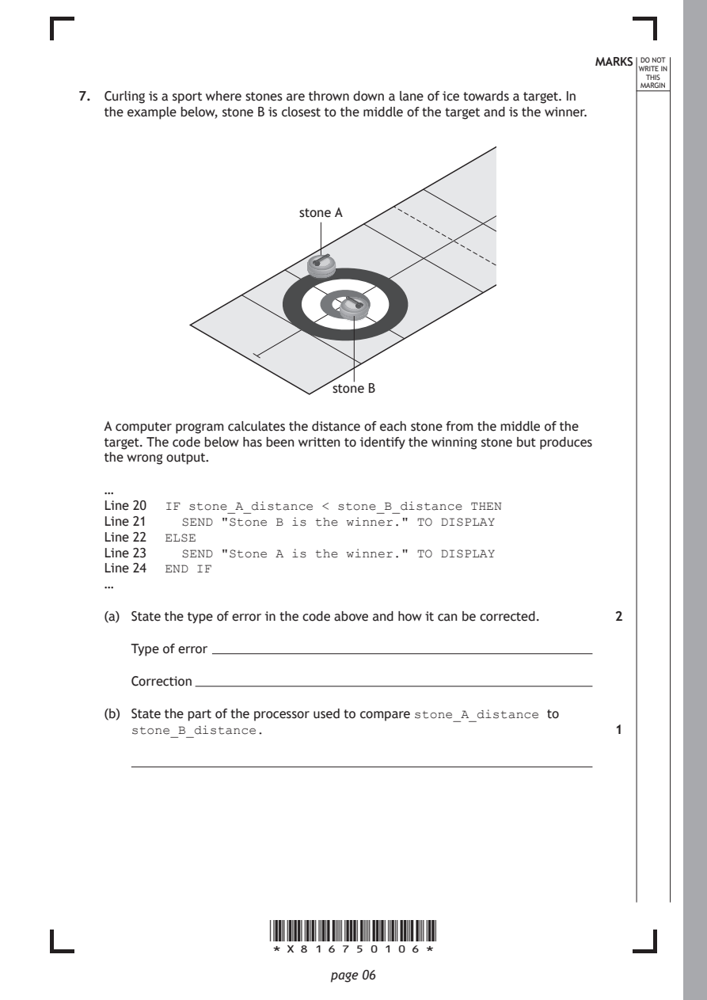
Selectable page text
MARKS DO NOT
WRITE IN
THIS
MARGIN
7. Curling is a sport where stones are thrown down a lane of ice towards a target. In
the example below, stone B is closest to the middle of the target and is the winner.
stone A
stone B
A computer program calculates the distance of each stone from the middle of the
target. The code below has been written to identify the winning stone but produces
the wrong output.
…
Line 20
IF stone_A_distance < stone_B_distance THEN
Line 21
SEND "Stone B is the winner." TO DISPLAY
Line 22
ELSE
Line 23
SEND "Stone A is the winner." TO DISPLAY
Line 24
END IF
…
(a) State the type of error in the code above and how it can be corrected. 2
Type of error
Correction
(b) State the part of the processor used to compare to
stone_A_distance
1
stone_B_distance.
*X816750106*
page 06PDF page 7
Question 8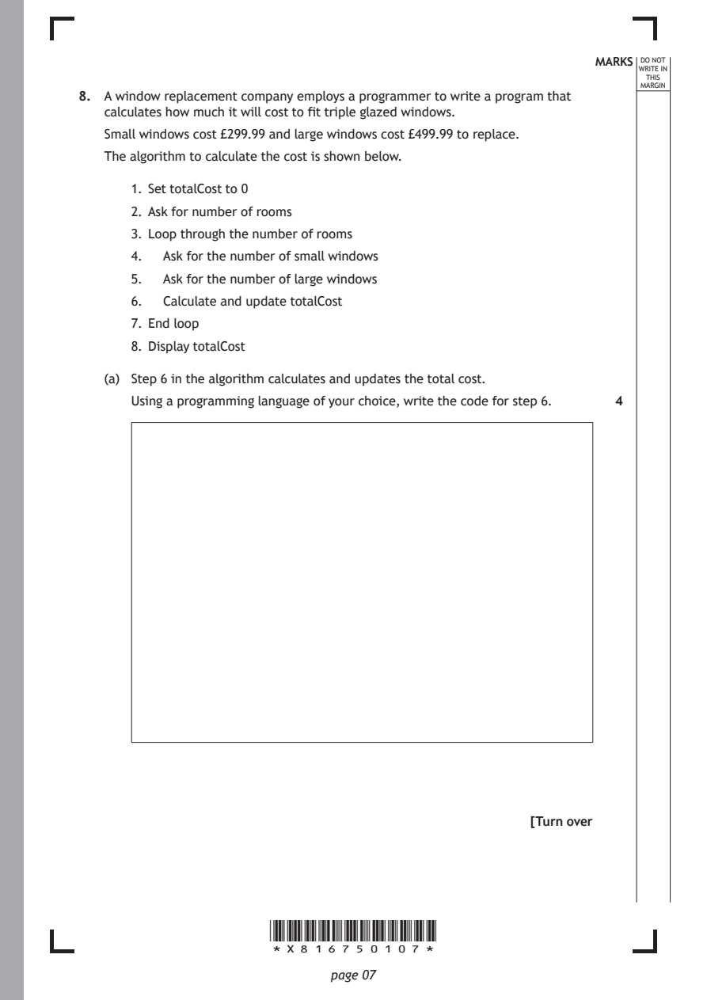
Selectable page text
MARKS DO NOT
WRITE IN
THIS
MARGIN
8. A window replacement company employs a programmer to write a program that
calculates how much it will cost to fit triple glazed windows.
Small windows cost £299.99 and large windows cost £499.99 to replace.
The algorithm to calculate the cost is shown below.
1. Set totalCost to 0
2. Ask for number of rooms
3. Loop through the number of rooms
4. Ask for the number of small windows
5. Ask for the number of large windows
6. Calculate and update totalCost
7. End loop
8. Display totalCost
(a) Step 6 in the algorithm calculates and updates the total cost.
Using a programming language of your choice, write the code for step 6. 4
[Turn over
*X816750107*
page 07PDF page 8
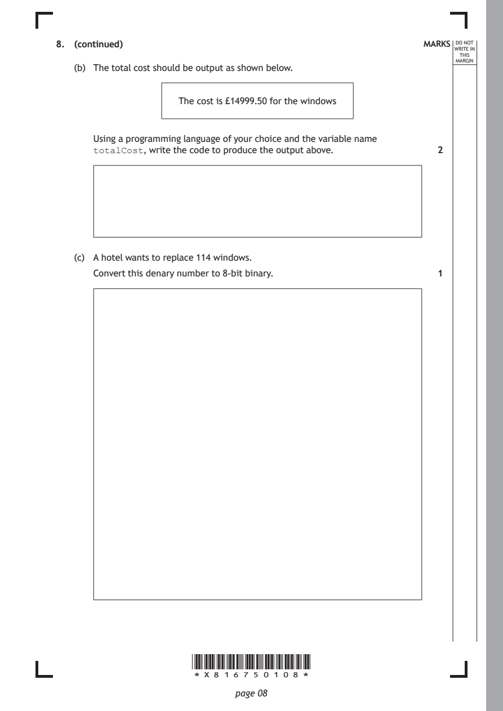
Selectable page text
8. (continued) MARKS DO NOT
WRITE IN
THIS
MARGIN
(b) The total cost should be output as shown below.
The cost is £14999.50 for the windows
Using a programming language of your choice and the variable name
, write the code to produce the output above. 2
totalCost
(c) A hotel wants to replace 114 windows.
Convert this denary number to 8-bit binary. 1
*X816750108*
page 08PDF page 9
Question 9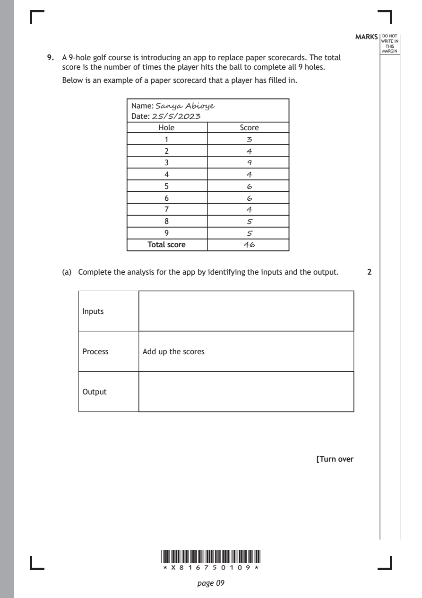
Selectable page text
MARKS DO NOT
WRITE IN
THIS
MARGIN
9. A 9-hole golf course is introducing an app to replace paper scorecards. The total
score is the number of times the player hits the ball to complete all 9 holes.
Below is an example of a paper scorecard that a player has filled in.
Name: Sanya Abioye
Date: 25/5/2023
Hole Score
1 3
2 4
3 9
4 4
5 6
6 6
7 4
8 5
9 5
Total score 46
(a) Complete the analysis for the app by identifying the inputs and the output. 2
Inputs
Process Add up the scores
Output
[Turn over
*X816750109*
page 09PDF page 10
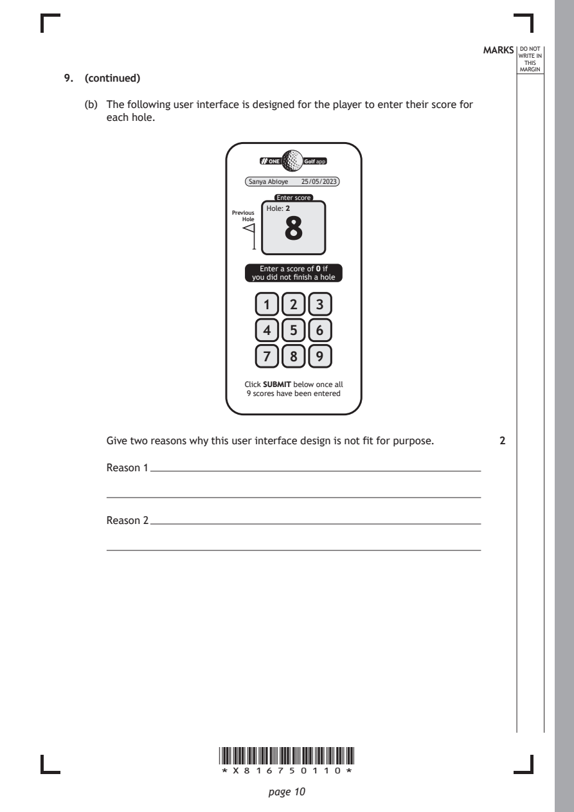
Selectable page text
MARKS DO NOT
WRITE IN
THIS
MARGIN
9. (continued)
(b) The following user interface is designed for the player to enter their score for
each hole.
#ONE Golf app
Sanya Abioye 25/05/2023
Enter score
Hole: 2
Previous
Hole 8
Enter a score of 0 if
you did not finish a hole
1 2 3
4 5 6
7 8 9
Click SUBMIT below once all
9 scores have been entered
Give two reasons why this user interface design is not fit for purpose. 2
Reason 1
Reason 2
*X816750110*
page 10PDF page 11
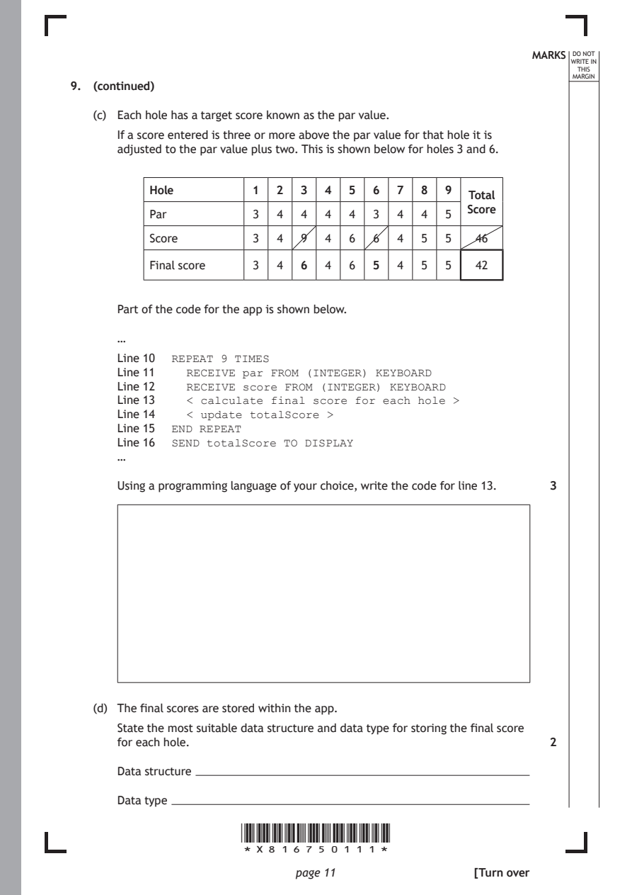
Selectable page text
MARKS DO NOT
WRITE IN
THIS
MARGIN
9. (continued)
(c) Each hole has a target score known as the par value.
If a score entered is three or more above the par value for that hole it is
adjusted to the par value plus two. This is shown below for holes 3 and 6.
Hole 1 2 3 4 5 6 7 8 9
Total
Score
Par 3 4 4 4 4 3 4 4 5
Score 3 4 9 4 6 6 4 5 5 46
Final score 3 4 6 4 6 5 4 5 5 42
Part of the code for the app is shown below.
…
Line 10
REPEAT 9 TIMES
Line 11
RECEIVE par FROM (INTEGER) KEYBOARD
Line 12
RECEIVE score FROM (INTEGER) KEYBOARD
Line 13
< calculate final score for each hole >
Line 14
< update totalScore >
Line 15
END REPEAT
Line 16
SEND totalScore TO DISPLAY
…
Using a programming language of your choice, write the code for line 13. 3
(d) The final scores are stored within the app.
State the most suitable data structure and data type for storing the final score
for each hole. 2
Data structure
Data type
*X816750111*
page 11 [Turn overPDF page 12
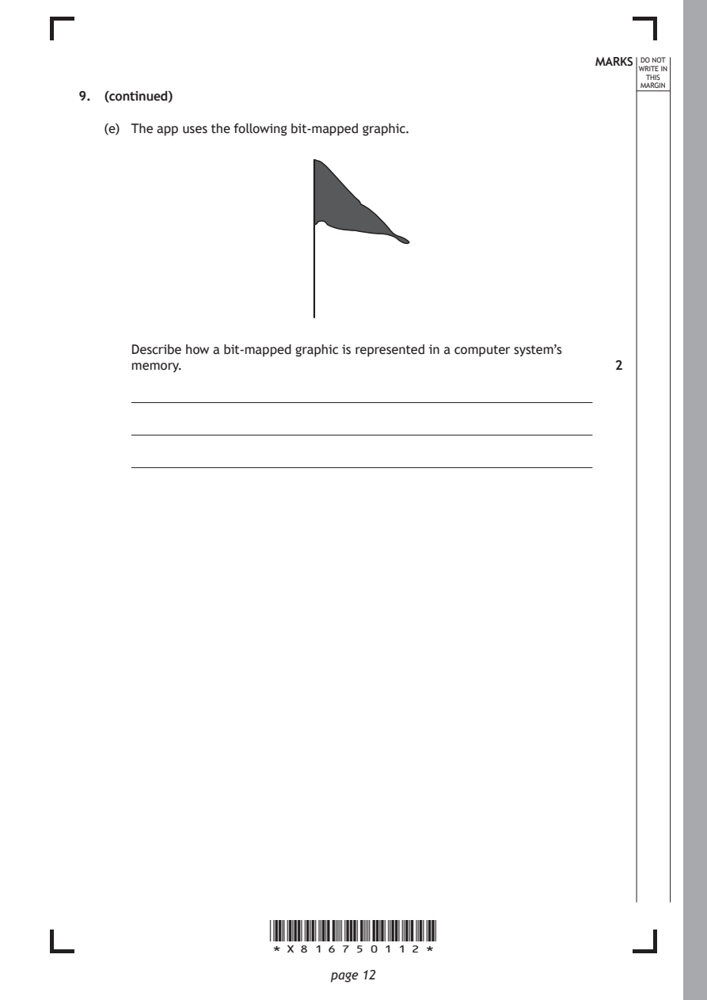
Selectable page text
MARKS DO NOT
WRITE IN
THIS
MARGIN
9. (continued)
(e) The app uses the following bit-mapped graphic.
Describe how a bit-mapped graphic is represented in a computer system’s
memory. 2
*X816750112*
page 12PDF page 13
Question 10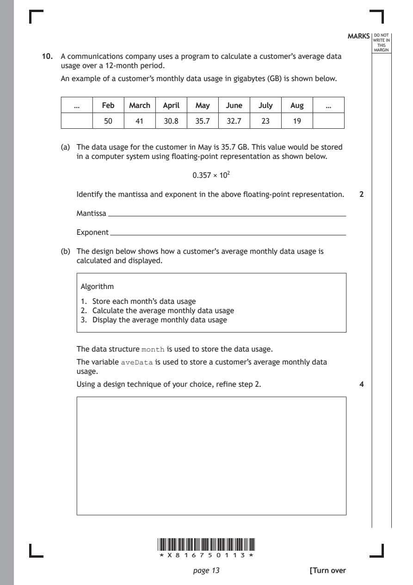
Selectable page text
MARKS DO NOT
WRITE IN
THIS
MARGIN
10. A communications company uses a program to calculate a customer’s average data
usage over a 12-month period.
An example of a customer’s monthly data usage in gigabytes (GB) is shown below.
… Feb March April May June July Aug …
50 41 30.8 35.7 32.7 23 19
(a) The data usage for the customer in May is 35.7 GB. This value would be stored
in a computer system using floating-point representation as shown below.
0.357 × 102
Identify the mantissa and exponent in the above floating-point representation. 2
Mantissa
Exponent
(b) The design below shows how a customer’s average monthly data usage is
calculated and displayed.
Algorithm
1. Store each month’s data usage
2. Calculate the average monthly data usage
3. Display the average monthly data usage
The data structure is used to store the data usage.
month
The variable is used to store a customer’s average monthly data
aveData
usage.
Using a design technique of your choice, refine step 2. 4
*X816750113*
page 13 [Turn overPDF page 14
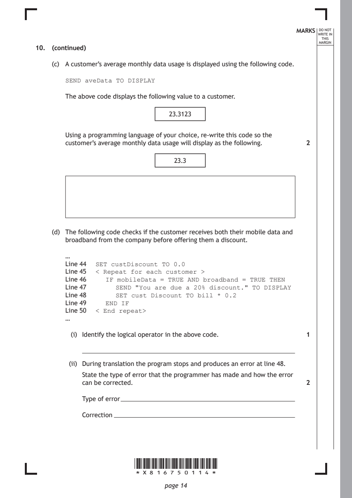
Selectable page text
MARKS DO NOT
WRITE IN
THIS
MARGIN
10. (continued)
(c) A customer’s average monthly data usage is displayed using the following code.
SEND aveData TO DISPLAY
The above code displays the following value to a customer.
23.3123
Using a programming language of your choice, re-write this code so the
customer’s average monthly data usage will display as the following. 2
23.3
(d) The following code checks if the customer receives both their mobile data and
broadband from the company before offering them a discount.
…
Line 44
SET custDiscount TO 0.0
Line 45
< Repeat for each customer >
Line 46
IF mobileData = TRUE AND broadband = TRUE THEN
Line 47
SEND "You are due a 20% discount." TO DISPLAY
Line 48
SET cust Discount TO bill * 0.2
Line 49
END IF
Line 50
< End repeat>
…
(i) Identify the logical operator in the above code. 1
(ii) During translation the program stops and produces an error at line 48.
State the type of error that the programmer has made and how the error
can be corrected. 2
Type of error
Correction
*X816750114*
page 14PDF page 15
Question 11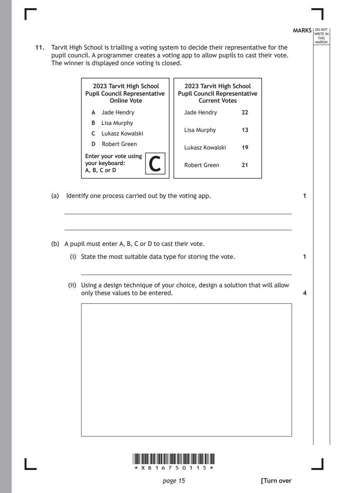
Selectable page text
MARKS DO NOT
WRITE IN
THIS
MARGIN
11. Tarvit High School is trialling a voting system to decide their representative for the
pupil council. A programmer creates a voting app to allow pupils to cast their vote.
The winner is displayed once voting is closed.
2023 Tarvit High School 2023 Tarvit High School
Pupil Council Representative Pupil Council Representative
Online Vote Current Votes
A Jade Hendry Jade Hendry 22
B Lisa Murphy
Lisa Murphy 13
C Lukasz Kowalski
D Robert Green
Lukasz Kowalski 19
Enter your vote using C
your keyboard:
Robert Green 21
A, B, C or D
(a) Identify one process carried out by the voting app. 1
(b) A pupil must enter A, B, C or D to cast their vote.
(i) State the most suitable data type for storing the vote. 1
(ii) Using a design technique of your choice, design a solution that will allow
only these values to be entered. 4
*X816750115*
page 15 [Turn overPDF page 16
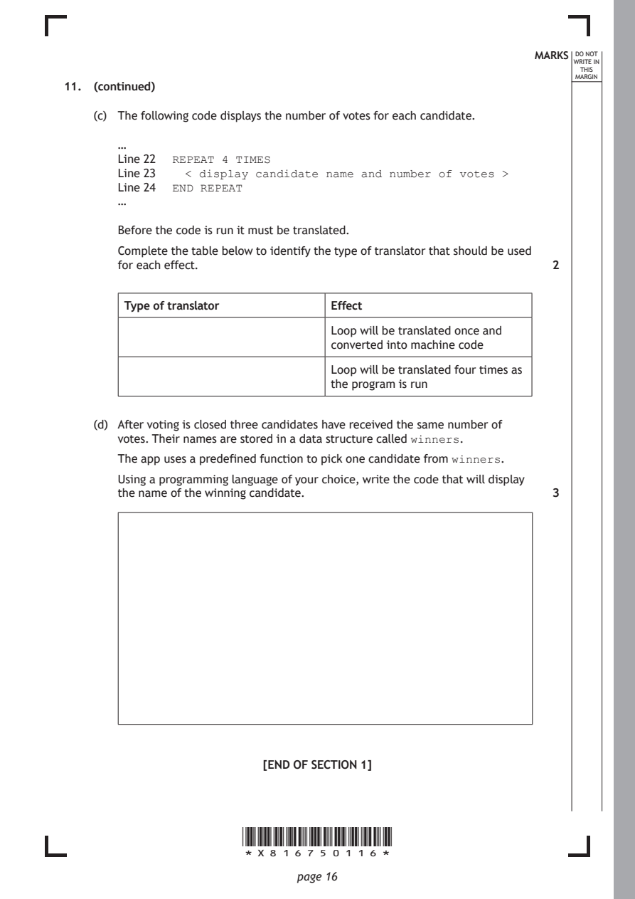
Selectable page text
MARKS DO NOT
WRITE IN
THIS
MARGIN
11. (continued)
(c) The following code displays the number of votes for each candidate.
…
Line 22
REPEAT 4 TIMES
Line 23
< display candidate name and number of votes >
Line 24
END REPEAT
…
Before the code is run it must be translated.
Complete the table below to identify the type of translator that should be used
for each effect. 2
Type of translator Effect
Loop will be translated once and
converted into machine code
Loop will be translated four times as
the program is run
(d) After voting is closed three candidates have received the same number of
votes. Their names are stored in a data structure called .
winners
The app uses a predefined function to pick one candidate from .
winners
Using a programming language of your choice, write the code that will display
the name of the winning candidate. 3
[END OF SECTION 1]
*X816750116*
page 16PDF page 17
Question 12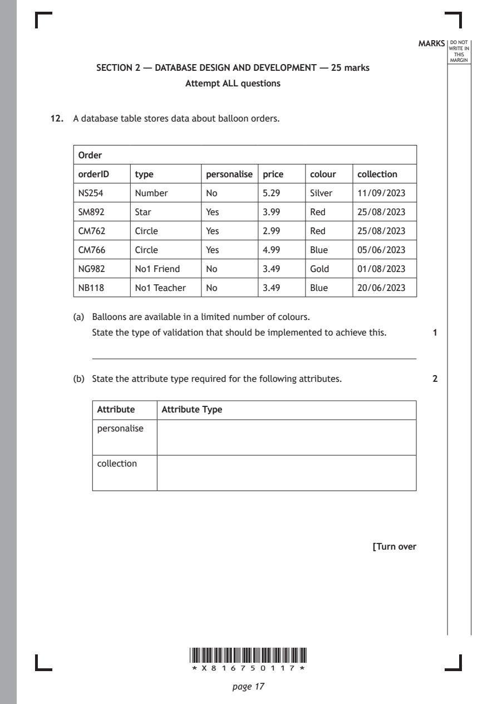
Selectable page text
MARKS DO NOT
WRITE IN
THIS
MARGIN
SECTION 2 — DATABASE DESIGN AND DEVELOPMENT — 25 marks
Attempt ALL questions
12. A database table stores data about balloon orders.
Order
orderID type personalise price colour collection
NS254 Number No 5.29 Silver 11/09/2023
SM892 Star Yes 3.99 Red 25/08/2023
CM762 Circle Yes 2.99 Red 25/08/2023
CM766 Circle Yes 4.99 Blue 05/06/2023
NG982 No1 Friend No 3.49 Gold 01/08/2023
NB118 No1 Teacher No 3.49 Blue 20/06/2023
(a) Balloons are available in a limited number of colours.
State the type of validation that should be implemented to achieve this. 1
(b) State the attribute type required for the following attributes. 2
Attribute Attribute Type
personalise
collection
[Turn over
*X816750117*
page 17PDF page 18
Question 13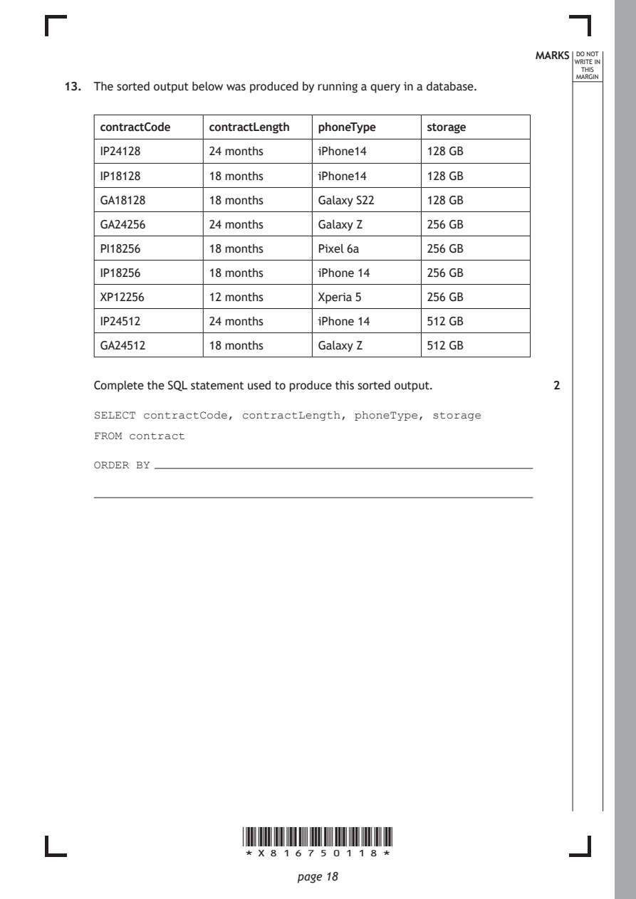
Selectable page text
MARKS DO NOT
WRITE IN
THIS
MARGIN
13. The sorted output below was produced by running a query in a database.
contractCode contractLength phoneType storage
IP24128 24 months iPhone14 128 GB
IP18128 18 months iPhone14 128 GB
GA18128 18 months Galaxy S22 128 GB
GA24256 24 months Galaxy Z 256 GB
PI18256 18 months Pixel 6a 256 GB
IP18256 18 months iPhone 14 256 GB
XP12256 12 months Xperia 5 256 GB
IP24512 24 months iPhone 14 512 GB
GA24512 18 months Galaxy Z 512 GB
Complete the SQL statement used to produce this sorted output. 2
SELECT contractCode, contractLength, phoneType, storage
FROM contract
ORDER BY
*X816750118*
page 18PDF page 19
Question 14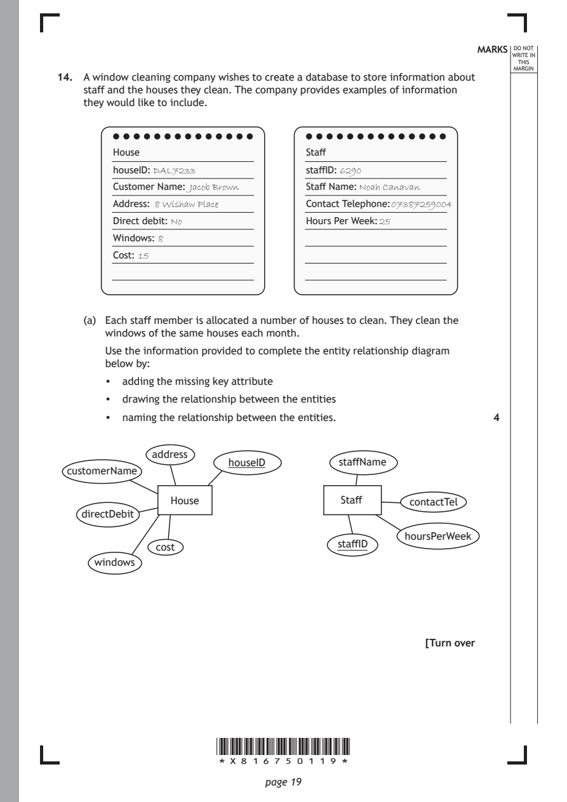
Selectable page text
MARKS DO NOT
WRITE IN
THIS
MARGIN
14. A window cleaning company wishes to create a database to store information about
staff and the houses they clean. The company provides examples of information
they would like to include.
House Staff
houseID: DAL7233 staffID: 6290
Customer Name: Jacob Brown Staff Name:Noah Canavan
Address: 8 Wishaw Place Contact Telephone:07387259004
Direct debit:No Hours Per Week:25
Windows: 8
Cost: 15
(a) Each staff member is allocated a number of houses to clean. They clean the
windows of the same houses each month.
Use the information provided to complete the entity relationship diagram
below by:
• adding the missing key attribute
• drawing the relationship between the entities
• naming the relationship between the entities. 4
address
houseID staffName
customerName
House Staff contactTel
directDebit
hoursPerWeek
cost staffID
windows
[Turn over
*X816750119*
page 19PDF page 20
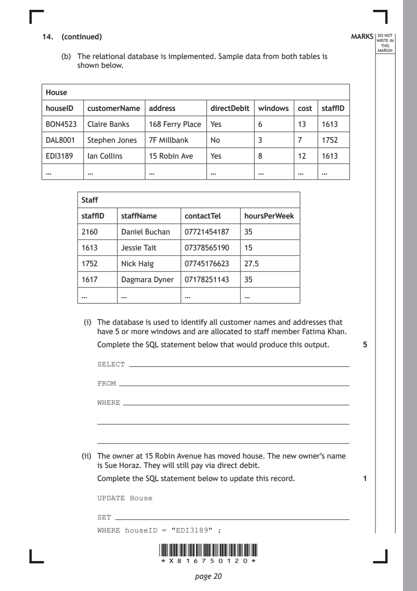
Selectable page text
14. (continued) MARKS DO NOT
WRITE IN
THIS
MARGIN
(b) The relational database is implemented. Sample data from both tables is
shown below.
House
houseID customerName address directDebit windows cost staffID
BON4523 Claire Banks 168 Ferry Place Yes 6 13 1613
DAL8001 Stephen Jones 7F Millbank No 3 7 1752
EDI3189 Ian Collins 15 Robin Ave Yes 8 12 1613
… … … … … … …
Staff
staffID staffName contactTel hoursPerWeek
2160 Daniel Buchan 07721454187 35
1613 Jessie Tait 07378565190 15
1752 Nick Haig 07745176623 27.5
1617 Dagmara Dyner 07178251143 35
… … … …
(i) The database is used to identify all customer names and addresses that
have 5 or more windows and are allocated to staff member Fatima Khan.
Complete the SQL statement below that would produce this output. 5
SELECT
FROM
WHERE
(ii) The owner at 15 Robin Avenue has moved house. The new owner’s name
is Sue Horaz. They will still pay via direct debit.
Complete the SQL statement below to update this record. 1
UPDATE House
SET
WHERE houseID = "EDI3189" ;
*X816750120*
page 20PDF page 21
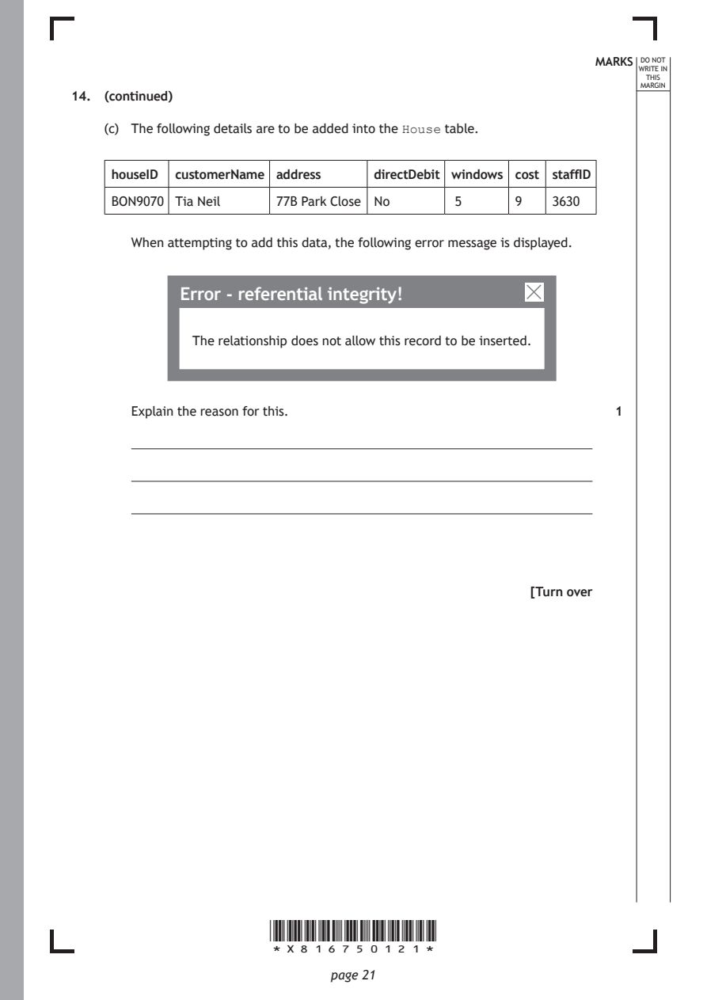
Selectable page text
MARKS DO NOT
WRITE IN
THIS
MARGIN
14. (continued)
(c) The following details are to be added into the table.
House
houseID customerName address directDebit windows cost staffID
BON9070 Tia Neil 77B Park Close No 5 9 3630
When attempting to add this data, the following error message is displayed.
Error - referential integrity!
The relationship does not allow this record to be inserted.
Explain the reason for this. 1
[Turn over
*X816750121*
page 21PDF page 22
Question 15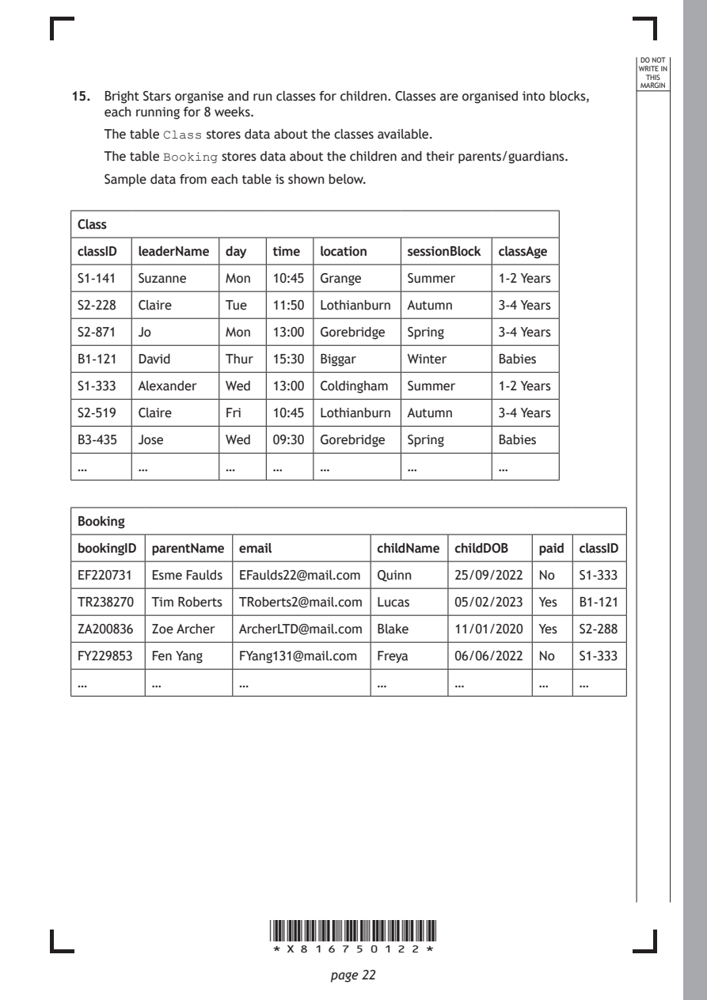
Selectable page text
DO NOT
WRITE IN
THIS
MARGIN
15. Bright Stars organise and run classes for children. Classes are organised into blocks,
each running for 8 weeks.
The table stores data about the classes available.
Class
The table stores data about the children and their parents/guardians.
Booking
Sample data from each table is shown below.
Class
classID leaderName day time location sessionBlock classAge
S1-141 Suzanne Mon 10:45 Grange Summer 1-2 Years
S2-228 Claire Tue 11:50 Lothianburn Autumn 3-4 Years
S2-871 Jo Mon 13:00 Gorebridge Spring 3-4 Years
B1-121 David Thur 15:30 Biggar Winter Babies
S1-333 Alexander Wed 13:00 Coldingham Summer 1-2 Years
S2-519 Claire Fri 10:45 Lothianburn Autumn 3-4 Years
B3-435 Jose Wed 09:30 Gorebridge Spring Babies
… … … … … … …
Booking
bookingID parentName email childName childDOB paid classID
EF220731 Esme Faulds EFaulds22@mail.com Quinn 25/09/2022 No S1-333
TR238270 Tim Roberts TRoberts2@mail.com Lucas 05/02/2023 Yes B1-121
ZA200836 Zoe Archer ArcherLTD@mail.com Blake 11/01/2020 Yes S2-288
FY229853 Fen Yang FYang131@mail.com Freya 06/06/2022 No S1-333
… … … … … … …
*X816750122*
page 22PDF page 23
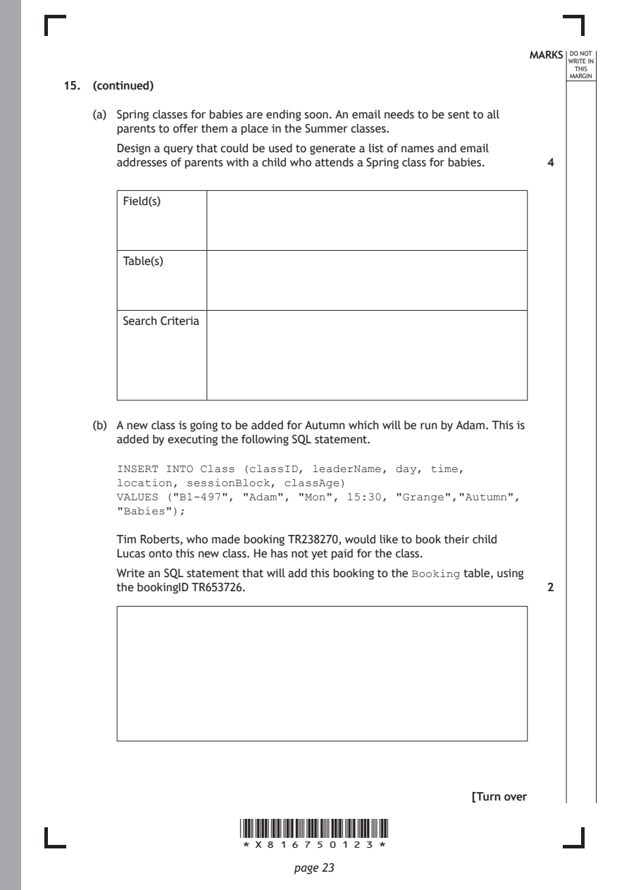
Selectable page text
MARKS DO NOT
WRITE IN
THIS
MARGIN
15. (continued)
(a) Spring classes for babies are ending soon. An email needs to be sent to all
parents to offer them a place in the Summer classes.
Design a query that could be used to generate a list of names and email
addresses of parents with a child who attends a Spring class for babies. 4
Field(s)
Table(s)
Search Criteria
(b) A new class is going to be added for Autumn which will be run by Adam. This is
added by executing the following SQL statement.
INSERT INTO Class (classID, leaderName, day, time,
location, sessionBlock, classAge)
VALUES ("B1-497", "Adam", "Mon", 15:30, "Grange","Autumn",
"Babies");
Tim Roberts, who made booking TR238270, would like to book their child
Lucas onto this new class. He has not yet paid for the class.
Write an SQL statement that will add this booking to the table, using
Booking
the bookingID TR653726. 2
[Turn over
*X816750123*
page 23PDF page 24
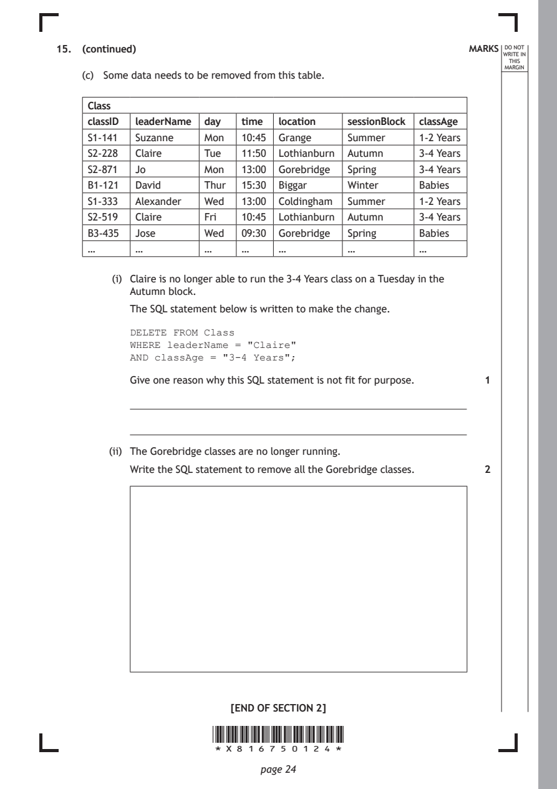
Selectable page text
15. (continued) MARKS DO NOT
WRITE IN
THIS
MARGIN
(c) Some data needs to be removed from this table.
Class
classID leaderName day time location sessionBlock classAge
S1-141 Suzanne Mon 10:45 Grange Summer 1-2 Years
S2-228 Claire Tue 11:50 Lothianburn Autumn 3-4 Years
S2-871 Jo Mon 13:00 Gorebridge Spring 3-4 Years
B1-121 David Thur 15:30 Biggar Winter Babies
S1-333 Alexander Wed 13:00 Coldingham Summer 1-2 Years
S2-519 Claire Fri 10:45 Lothianburn Autumn 3-4 Years
B3-435 Jose Wed 09:30 Gorebridge Spring Babies
… … … … … … …
(i) Claire is no longer able to run the 3-4 Years class on a Tuesday in the
Autumn block.
The SQL statement below is written to make the change.
DELETE FROM Class
WHERE leaderName = "Claire"
AND classAge = "3-4 Years";
Give one reason why this SQL statement is not fit for purpose. 1
(ii) The Gorebridge classes are no longer running.
Write the SQL statement to remove all the Gorebridge classes. 2
[END OF SECTION 2]
*X816750124*
page 24PDF page 25
Question 16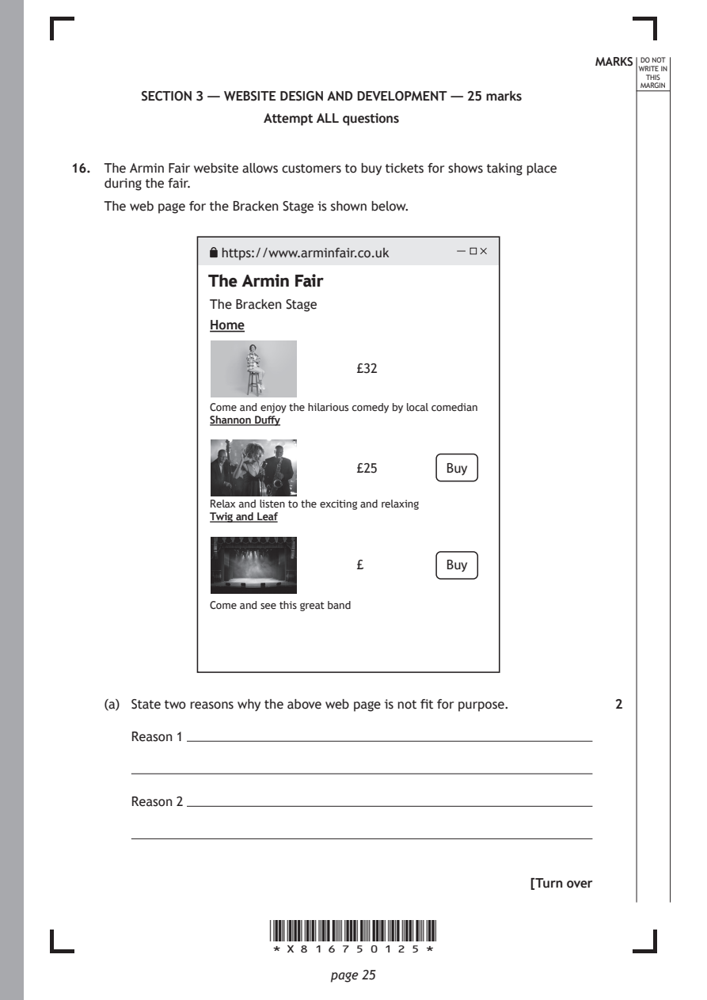
Selectable page text
MARKS DO NOT
WRITE IN
THIS
MARGIN
SECTION 3 — WEBSITE DESIGN AND DEVELOPMENT — 25 marks
Attempt ALL questions
16. The Armin Fair website allows customers to buy tickets for shows taking place
during the fair.
The web page for the Bracken Stage is shown below.
https://www.arminfair.co.uk
The Armin Fair
The Bracken Stage
Home
£32
Come and enjoy the hilarious comedy by local comedian
Shannon Duffy
£25 Buy
Relax and listen to the exciting and relaxing
Twig and Leaf
£ Buy
Come and see this great band
(a) State two reasons why the above web page is not fit for purpose. 2
Reason 1
Reason 2
[Turn over
*X816750125*
page 25PDF page 26
Question 17Question 18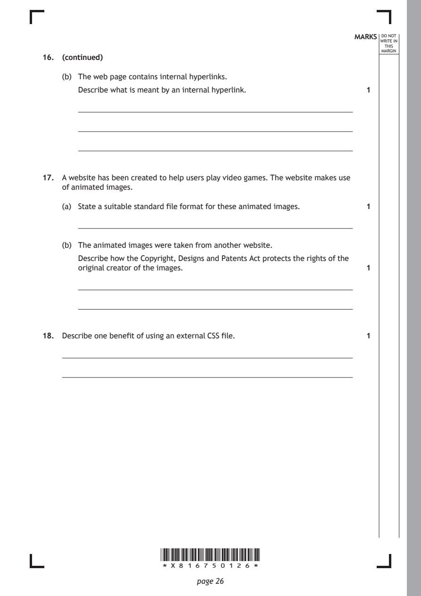
Selectable page text
MARKS DO NOT
WRITE IN
THIS
MARGIN
16. (continued)
(b) The web page contains internal hyperlinks.
Describe what is meant by an internal hyperlink. 1
17. A website has been created to help users play video games. The website makes use
of animated images.
(a) State a suitable standard file format for these animated images. 1
(b) The animated images were taken from another website.
Describe how the Copyright, Designs and Patents Act protects the rights of the
original creator of the images. 1
18. Describe one benefit of using an external CSS file. 1
*X816750126*
page 26PDF page 27
Question 19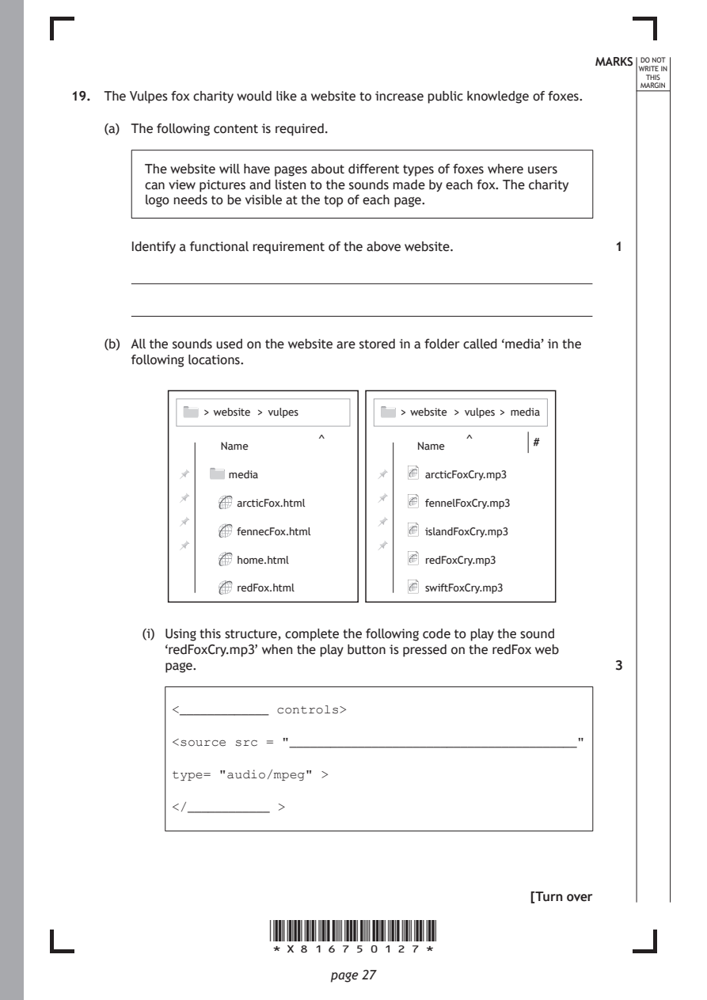
Selectable page text
MARKS DO NOT
WRITE IN
THIS
MARGIN
19. The Vulpes fox charity would like a website to increase public knowledge of foxes.
(a) The following content is required.
The website will have pages about different types of foxes where users
can view pictures and listen to the sounds made by each fox. The charity
logo needs to be visible at the top of each page.
Identify a functional requirement of the above website.
(b) All the sounds used on the website are stored in a folder called ‘media’ in the
following locations.
> website >
*X816750127*
page 27
>
vulpes > website > vulpes > media
#
Name
media
arcticFox.html
fennecFox.html
home.html
redFox.html
>
1
Name
arcticFoxCry.mp3
fennelFoxCry.mp3
islandFoxCry.mp3
redFoxCry.mp3
swiftFoxCry.mp3
(i) Using this structure, complete the following code to play the sound
‘redFoxCry.mp3’ when the play button is pressed on the redFox web
page. 3
_____________
< controls>
__________________________________________
<source src = " "
type= "audio/mpeg" >
____________
</ >
[Turn overPDF page 28
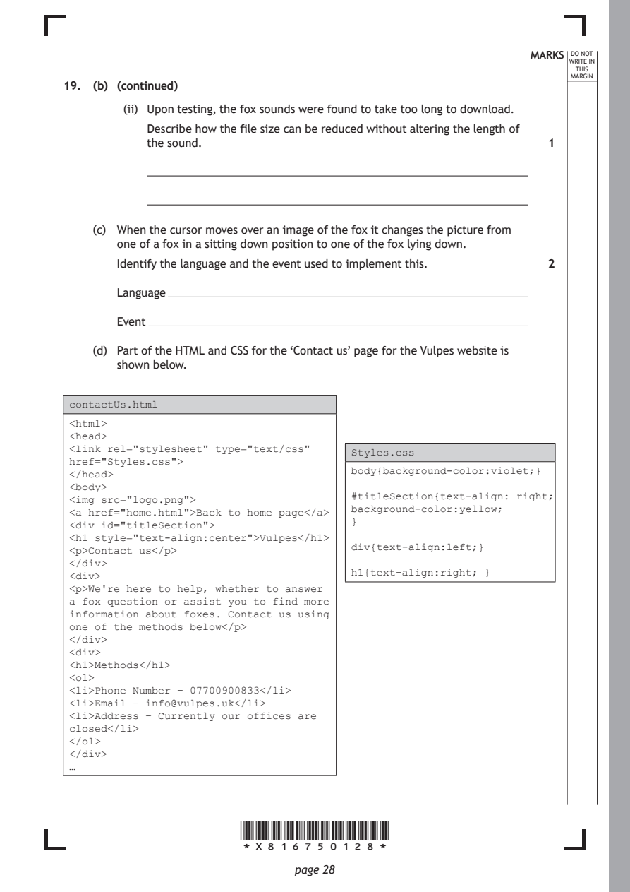
Selectable page text
MARKS DO NOT
WRITE IN
THIS
MARGIN
19. (b) (continued)
(ii) Upon testing, the fox sounds were found to take too long to download.
Describe how the file size can be reduced without altering the length of
the sound. 1
(c) When the cursor moves over an image of the fox it changes the picture from
one of a fox in a sitting down position to one of the fox lying down.
Identify the language and the event used to implement this. 2
Language
Event
(d) Part of the HTML and CSS for the ‘Contact us’ page for the Vulpes website is
shown below.
contactUs.html
<html>
<head>
<link rel="stylesheet" type="text/css"
Styles.css
href="Styles.css">
</head> body{background-color:violet;}
<body>
<img src="logo.png"> #titleSection{text-align: right;
<a href="home.html">Back to home page</a> background-color:yellow;
<div id="titleSection"> }
<h1 style="text-align:center">Vulpes</h1>
<p>Contact us</p> div{text-align:left;}
</div>
<div> h1{text-align:right; }
<p>We're here to help, whether to answer
a fox question or assist you to find more
information about foxes. Contact us using
one of the methods below</p>
</div>
<div>
<h1>Methods</h1>
<ol>
<li>Phone Number – 07700900833</li>
<li>Email – info@vulpes.uk</li>
<li>Address – Currently our offices are
closed</li>
</ol>
</div>
…
*X816750128*
page 28PDF page 29
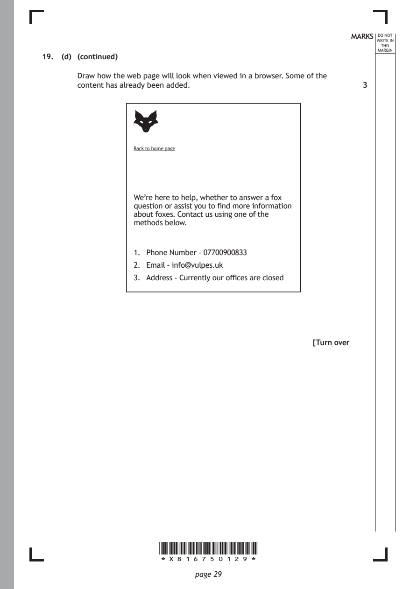
Selectable page text
MARKS DO NOT
WRITE IN
THIS
MARGIN
19. (d) (continued)
Draw how the web page will look when viewed in a browser. Some of the
content has already been added. 3
Vulpes
Back to home page
We’re here to help, whether to answer a fox
question or assist you to find more information
about foxes. Contact us using one of the
methods below.
1. Phone Number - 07700900833
2. Email - info@vulpes.uk
3. Address - Currently our offices are closed
[Turn over
*X816750129*
page 29PDF page 30
Question 20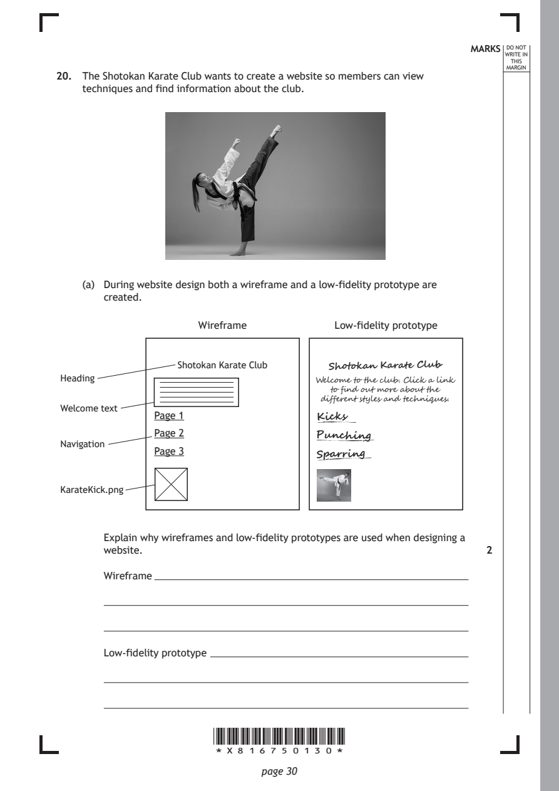
Selectable page text
MARKS DO NOT
WRITE IN
THIS
MARGIN
20. The Shotokan Karate Club wants to create a website so members can view
techniques and find information about the club.
(a) During website design both a wireframe and a low-fidelity prototype are
created.
Wireframe Low-fidelity prototype
Shotokan Karate Club Shotokan Karate Club
Heading
Welcome to the club. Click a link
to find out more about the
different styles and techniques.
Welcome text
Page 1
Kicks
Page 2
Punching
Navigation
Page 3
Sparring
KarateKick.png
Explain why wireframes and low-fidelity prototypes are used when designing a
website. 2
Wireframe
Low-fidelity prototype
*X816750130*
page 30PDF page 31
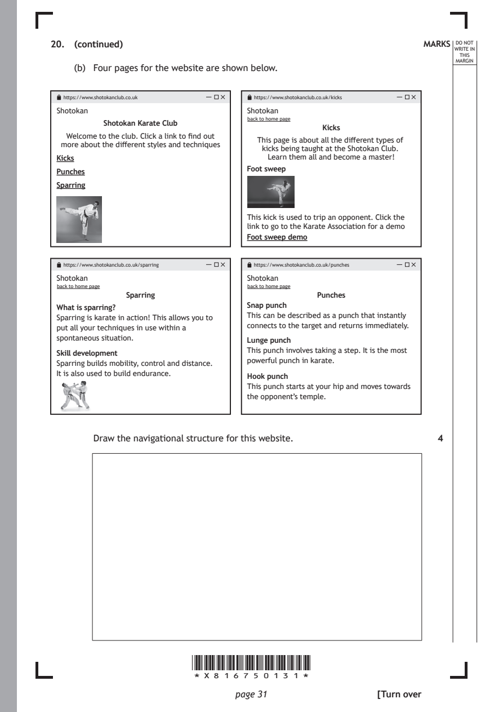
Selectable page text
20. (continued) MARKS DO NOT
WRITE IN
THIS
MARGIN
(b) Four pages for the website are shown below.
https://www.shotokanclub.co.uk https://www.shotokanclub.co.uk/kicks
Shotokan Shotokan
back to home page
Shotokan Karate Club
Kicks
Welcome to the club. Click a link to find out
This page is about all the different types of
more about the different styles and techniques
kicks being taught at the Shotokan Club.
Kicks Learn them all and become a master!
Foot sweep
Punches
Sparring
This kick is used to trip an opponent. Click the
link to go to the Karate Association for a demo
Foot sweep demo
https://www.shotokanclub.co.uk/sparring https://www.shotokanclub.co.uk/punches
Shotokan Shotokan
back to home page back to home page
Sparring Punches
What is sparring? Snap punch
Sparring is karate in action! This allows you to This can be described as a punch that instantly
put all your techniques in use within a connects to the target and returns immediately.
spontaneous situation. Lunge punch
This punch involves taking a step. It is the most
Skill development
powerful punch in karate.
Sparring builds mobility, control and distance.
It is also used to build endurance.
Hook punch
This punch starts at your hip and moves towards
the opponent’s temple.
Draw the navigational structure for this website. 4
*X816750131*
page 31 [Turn overPDF page 32
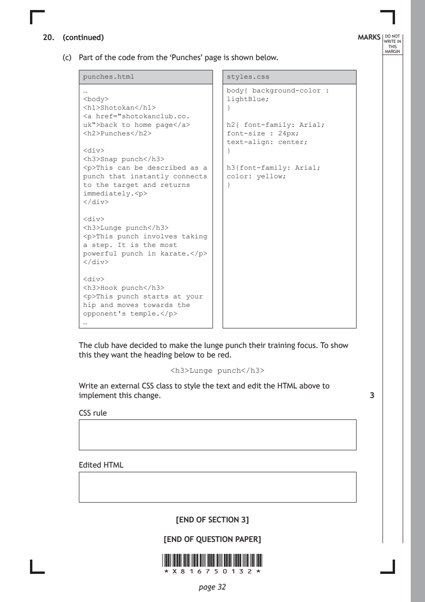
Selectable page text
20. (continued) MARKS DO NOT
WRITE IN
THIS
MARGIN
(c) Part of the code from the ‘Punches’ page is shown below.
punches.html styles.css
… body{ background-color :
<body> lightBlue;
<h1>Shotokan</h1> }
<a href="shotokanclub.co.
uk">back to home page</a> h2{ font-family: Arial;
<h2>Punches</h2> font-size : 24px;
text-align: center;
<div> }
<h3>Snap punch</h3>
<p>This can be described as a h3{font-family: Arial;
punch that instantly connects color: yellow;
to the target and returns }
immediately.<p>
</div>
<div>
<h3>Lunge punch</h3>
<p>This punch involves taking
a step. It is the most
powerful punch in karate.</p>
</div>
<div>
<h3>Hook punch</h3>
<p>This punch starts at your
hip and moves towards the
opponent's temple.</p>
…
The club have decided to make the lunge punch their training focus. To show
this they want the heading below to be red.
<h3>Lunge punch</h3>
Write an external CSS class to style the text and edit the HTML above to
implement this change. 3
CSS rule
Edited HTML
[END OF SECTION 3]
[END OF QUESTION PAPER]
*X816750132*
page 32PDF page 33
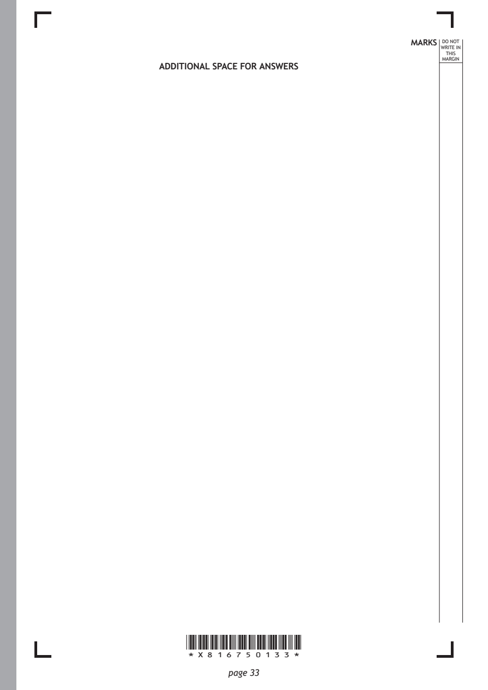
Selectable page text
MARKS DO NOT
WRITE IN
THIS
MARGIN
ADDITIONAL SPACE FOR ANSWERS
*X816750133*
page 33PDF page 34

Selectable page text
MARKS DO NOT
WRITE IN
THIS
MARGIN
ADDITIONAL SPACE FOR ANSWERS
*X816750134*
page 34PDF page 35

Selectable page text
[BLANK PAGE]
DO NOT WRITE ON THIS PAGE
*X816750135*
page 35PDF page 36
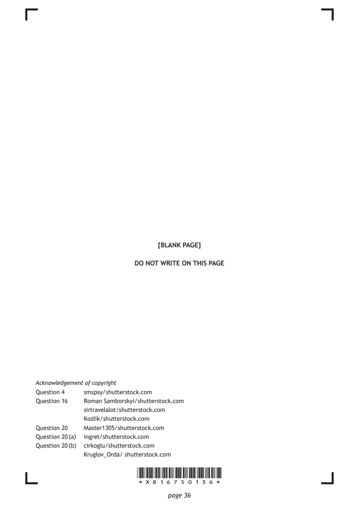
Selectable page text
[BLANK PAGE]
DO NOT WRITE ON THIS PAGE
Acknowledgement of copyright
Question 4 smspsy/shutterstock.com
Question 16 Roman Samborskyi/shutterstock.com
sirtravelalot/shutterstock.com
Kozlik/shutterstock.com
Question 20 Master1305/shutterstock.com
Question 20 (a) ingret/shutterstock.com
Question 20 (b) cirkoglu/shutterstock.com
Kruglov_Orda/ shutterstock.com
*X816750136*
page 36